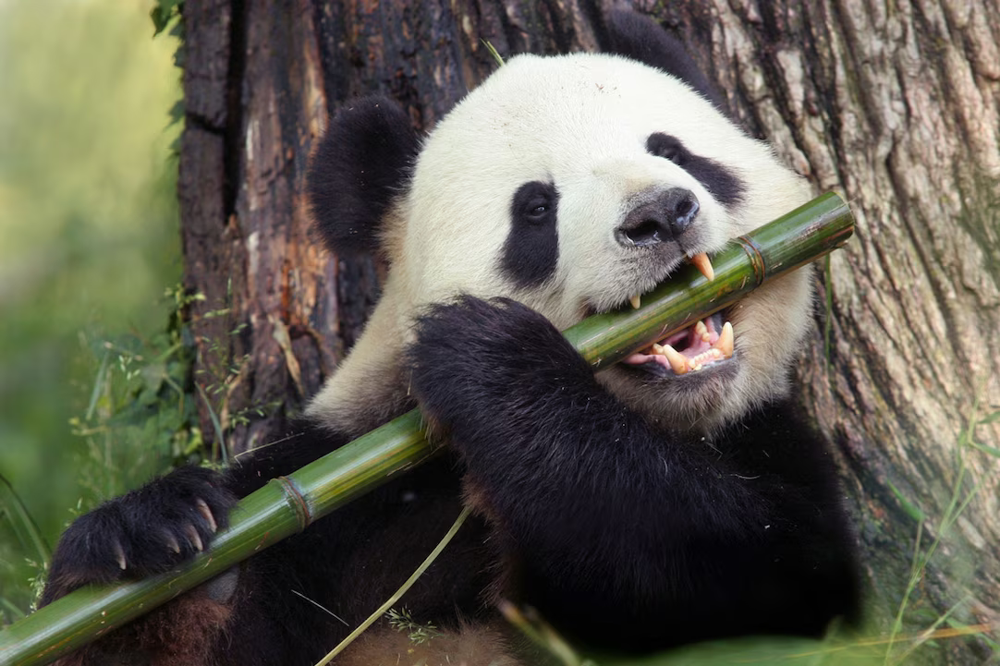

PANDAS!


The giant panda is a vulnerable species, threatened by continued habitat loss and fragmentation, and by a very low birthrate, both in the wild and in captivity. Its range is confined to a small portion on the western edge of its historical range, which stretched through southern and eastern China, northern Myanmar, and northern Vietnam. The species is scattered into more than 30 subpopulations of relatively few animals. Building of roads and human settlement near panda habitat, result in population declines. Diseases from domesticated pets and livestock is another threat. By 2100, it is estimated that the distribution of giant pandas will shrink by up to 100%, mainly due to the effects of climate change. The giant panda is listed on CITES Appendix I, meaning trade of their parts is prohibited and that they require this protection to avoid extinction. They have been protected and placed in category 1, by the 1988 Wildlife Protection Act.
The giant panda has been a target of poaching by locals since ancient times and by foreigners since it was introduced to the West. Starting in the 1930s, foreigners were unable to poach giant pandas in China because of the Second Sino-Japanese War and the Chinese Civil War, but pandas remained a source of soft furs for the locals. The population boom in China after 1949 created stress on the pandas' habitat and the subsequent famines led to the increased hunting of wildlife, including pandas. After the Chinese economic reform, demand for panda skins from Hong Kong and Japan led to illegal poaching for the black market, acts generally ignored by the local officials at the time. In 1963, the PRC government set up Wolong National Nature Reserve to save the declining panda population.
The giant panda is among the world's most adored and protected rare animals, and is one of the few in the world whose natural inhabitant status was able to gain a UNESCO World Heritage Site designation. The Sichuan Giant Panda Sanctuaries, located in the southwest province of Sichuan and covering seven natural reserves, were inscribed onto the World Heritage List in 2006.